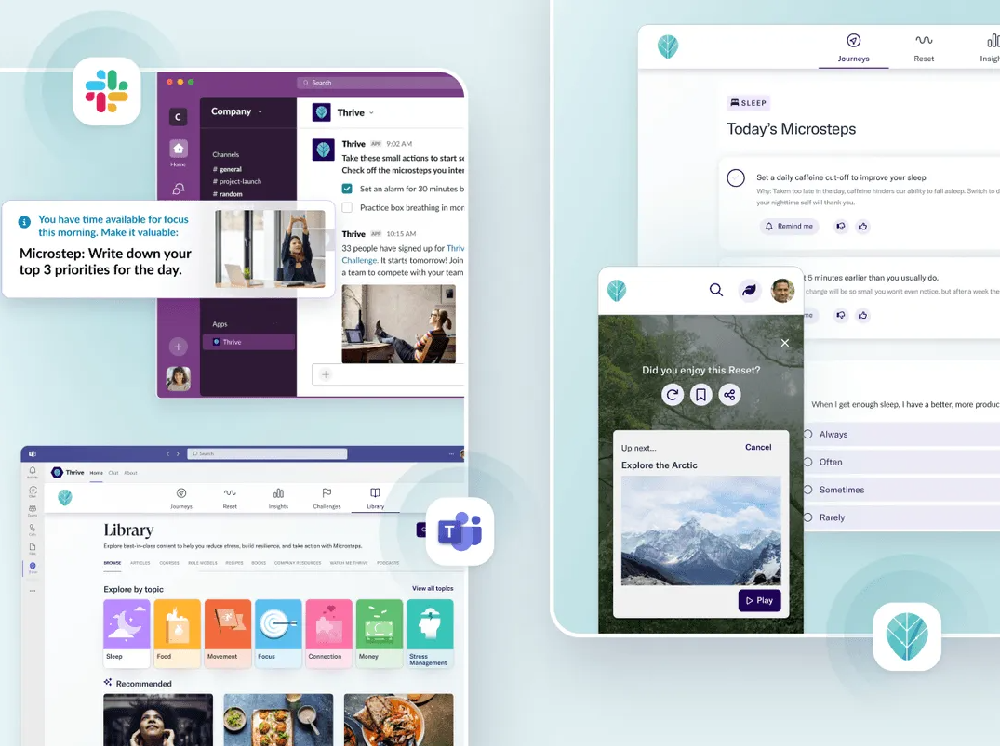
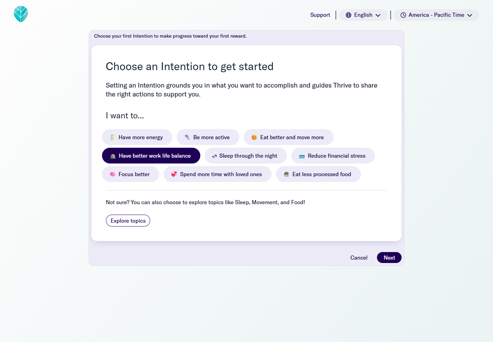
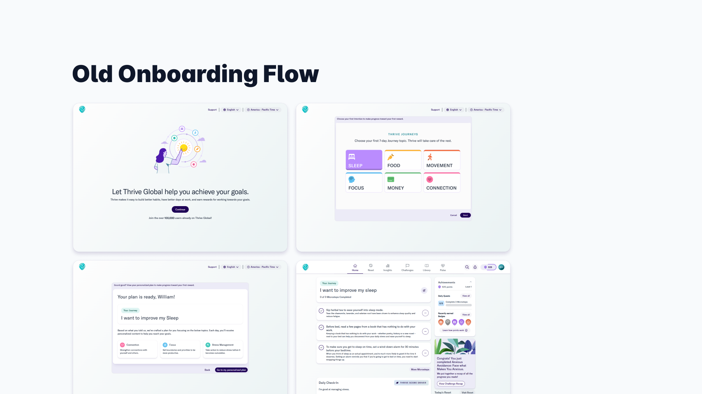

Context
Thrive Global is a B2B SaaS platform designed to help organizations support employee well-being through personalized behavior-change programs. As the enterprise product matured, we noticed early onboarding was doing too much: it front-loaded information and asked users to understand the system before they’d experienced value.

Problem
The onboarding flow was overloaded with information and lacked personalization, causing users to:
- Struggle to tailor Thrive Global to their personal needs (too many options presented too early).
- Take fewer meaningful actions, leading to minimal engagement with the core tool.
- Feel overwhelmed after onboarding with unclear guidance on what to do first.
This led to slower habit-building and made it harder for users to discover the full value of Thrive.
Evidence
Through a combination of product analytics, user research, and customer feedback, we uncovered:
- Drop-off during onboarding before users reached their first “value moment.”
- Session recordings showing confusion and decision fatigue as users navigated too many choices.
- User interviews revealing employees wanted to set clear boundaries (e.g., reminders/check-ins) and focus on a single priority first.
We also heard from HR leaders that onboarding often felt like “another cognitive load,” not a supportive experience.
My Role
As the lead designer for Thrive’s onboarding initiative, I focused on building a scalable foundation for structured collaboration across teams, improving efficiency in delivery, and delivering a best-in-class onboarding experience for enterprise clients.
Key responsibilities included:
- 🔄 Ran end-to-end design - from discovery and ideation through high-fidelity design and developer handoff.
- 🧠 Facilitated workshops - with PM, engineering, and stakeholders to define key moments of personalization.
- 🧱 Scaling with the design system - creating modular onboarding components that could be adapted across enterprise setups.
- 🧪 Conducted moderated usability tests - validating flows, messaging, and recommendation patterns.
- 🤝 Partner with Customer Success - ensuring the experience aligned with enterprise rollout needs and communication styles.
Team
1 PD (me), 1 PM, 1 Engineer, 1 Data Analyst, Customer Success partners
Timeline
~5 months (discovery → shipped experiments → iteration)
Solution
We streamlined and personalized the onboarding experience by introducing:
- A “personal selector” upfront so users can choose a primary intent (focus), reducing noise and speeding up time-to-value.
- Preferences & reminders that let users set boundaries (when/how they want to be nudged).
- A tailored starting dashboard that reflects chosen priorities immediately after onboarding.



Ask one meaningful question early, then progressively disclose options as the user gains confidence.
Impact
Quantitative
- 12% decrease in onboarding drop-off rates, improving overall activation.
- 23% more users completed a first coaching activity within 7 days, indicating higher early engagement.
- Reduced support tickets related to onboarding experience by 11%.
Qualitative
- User feedback highlighted the value of customization.
- Customers reported onboarding felt “less noisy” and helped employees focus on what mattered first.
- HR partners felt more confident rolling out Thrive to new hires due to clearer guidance and a more supportive start.
Belief
Behavior-change products work best when they reduce friction and make the “first right step” obvious. By guiding users toward a single priority, letting them set boundaries, and showing immediate relevance, we improved clarity without removing choice, we simply sequenced it.

